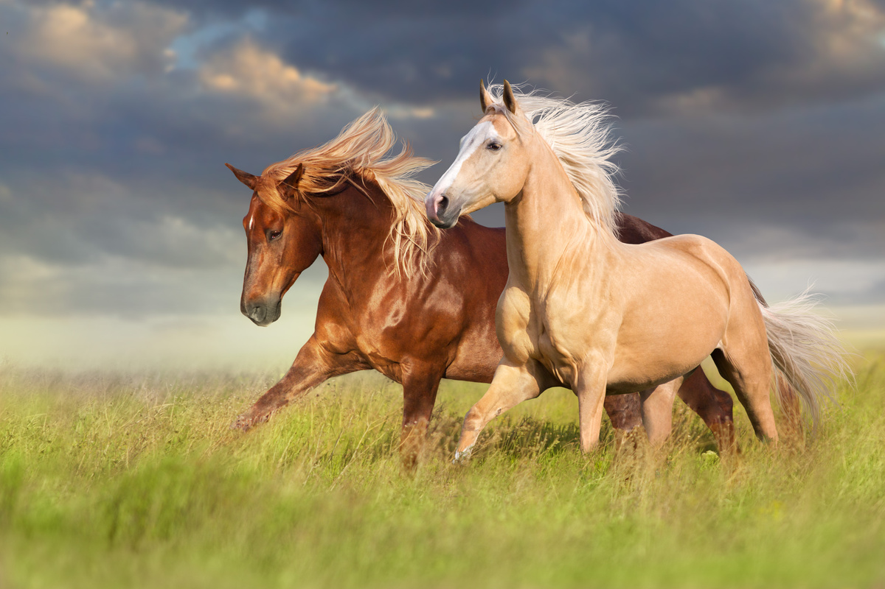
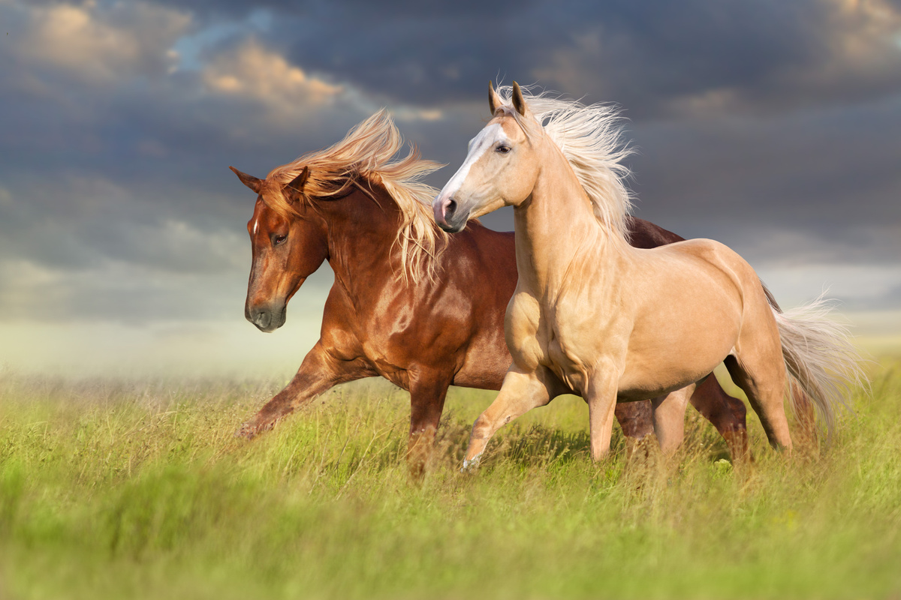

cavalo é um animal mamífero da família Equidae e do gênero Equus. No gênero Equus, além do cavalo, encontramos o asno e a zebra. Existem várias raças de cavalo em todo mundo, sendo possível encontrar no Brasil cerca de uma dezena dessas. São exemplos de raças de cavalo: crioula, pantaneira, mangalarga, quarto-de-milha, puro-sangue-inglês e puro-sangue-lusitano.
O cavalo é um animal que se alimenta de vegetais, sendo, portanto, um herbívoro. Diferentemente do que muitos pensam, os cavalos não são animais ruminantes, ou seja, não possuem estômago com vários compartimentos. Trata-se de animais monogástricos, isto é, que apresentam apenas um estômago simples. A digestão das fibras ocorre no intestino grosso desses animais.
Os cavalos da raça Puro Sangue Inglês (PSI) tem porte médio para grande, com altura variando entre 1,62 a 1,67 metros; a cabeça é reta ou levemente ondulada; os olhos são grandes; as orelhas médias; e as narinas elípticas. Os animais possuem pelagem castanha, alazão e negra.
Os animais da raça são selecionados especialmente para corrida por serem considerados a raça mais veloz entre os equinos, e por possuir grande capacidade
As principais habilidades se relacionam às corridas planas ou com obstáculos de média distância, salto, adestramento e CCE. Os cavalos da raça PSI também são corajosos e fortes, possuindo corpo proporcional e robusto.